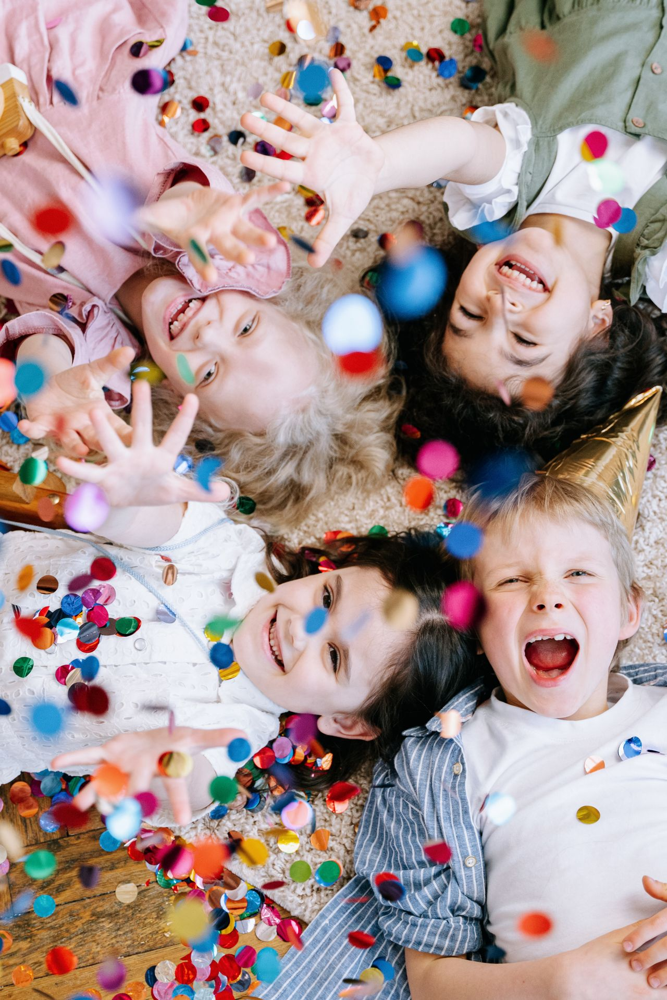

Un patio donde
cada alumno
tiene su sitio.
En el CEIP El Zahor llevamos un curso trabajando para que el recreo sea, además de un descanso, un espacio de encuentro, juego y aprendizaje entre todo el alumnado. Esto es un resumen de lo que hemos hecho hasta ahora.

Imagen de Portada
assets/img/hero-bg.jpg
Recreos Inclusivos
Tenemos organizados los cuadrantes de juegos y materiales para los recreos inclusivos de Infantil, Primaria y Secundaria.
El alumnado encargado se ocupa de las cajas de material desde la cristalera del gimnasio. Por nuestra parte, el profesorado dinamiza los juegos, controla el material y vigila que el ambiente sea bueno, sin menosprecios ni agresividad, para que el recreo sea agradable para todos.
Alumnado responsable desde la cristalera del gimnasio.
Zonas definidas para juegos inclusivos en Secundaria.
Profesorado atento para mantener una convivencia positiva.
Evidencias del proyecto · Haz clic para ampliar
Inclusión: Un Espacio para Todos
Más allá de actividades puntuales, esto forma parte de cómo entendemos el CEIP El Zahor: un centro donde se trabaja para que el alumnado se sienta seguro, valorado y pueda crecer con normalidad, sea como sea.
Con motivo del 21 de marzo (Día del Síndrome de Down) y el 2 de abril (Día del Autismo), el centro participa en distintas actividades para visibilizar la diversidad. Con la campaña de los calcetines desparejados recordamos que cada persona es distinta y aprende a su ritmo, una idea que también apoya el Ayuntamiento iluminando de azul algunos edificios.
Celebrar la diferencia
El calcetín distinto recuerda que cada persona es única y eso es lo que enriquece al grupo.
Entornos accesibles (SAAC)
Pictogramas y apoyos visuales en los patios para que el recreo sea un espacio de comunicación para todos.
Ver vídeo
Miércoles en Abierto
Un espacio voluntario al que el alumnado puede acudir en el recreo para hablar de lo que le preocupe con la orientadora y la maestra de PT.
Es una forma más de acompañar al alumnado y cuidar el bienestar emocional dentro del centro.
Espacio de Orientación y Apoyo
Mural Conmemorativo · Haz clic para ampliar
Bibliopatio: Deja tu huella
Con motivo de la Semana del Libro, invitamos a las familias y al alumnado a donar una lectura especial, además de organizar juegos y otras actividades para quien prefiera participar de esa forma.
La idea de partida era sencilla: que cada persona recomendara una historia que le hubiera gustado, emocionado o enseñado algo. Con la colaboración de las familias y el alumnado, ha salido adelante el Bibliopatio.
Durante los recreos, una zona del patio se convierte en un rincón de lectura libre al aire libre. Una forma distinta de leer, fuera del aula, donde cada uno elige su libro y su rato de lectura.
Donaciones con sentido
Libros aportados por las propias familias, con valor para quien los recomienda.
Lectura en el recreo
Una opción más para el tiempo libre, donde el alumnado comparte libros y recomendaciones.
"Cada libro donado por una familia es una puerta abierta a nuevas aventuras para todo el alumnado." — Campaña de la Semana del Libro · CEIP El Zahor
Vídeo del proyecto
Comunidad en Acción · Haz clic para ampliar
El Día de la Familia
Gracias a las familias y al alumnado que ayudaron a darle otra cara al patio.
En el Día de la Familia renovamos las zonas de juego y los circuitos de psicomotricidad, le dimos color a varios espacios y, sobre todo, pasamos un buen rato trabajando juntos. El alumnado sabe que ese patio lo pintaron, en parte, sus propias familias.
Zonas renovadas
Juegos y circuitos de psicomotricidad puestos al día con la ayuda de las familias.
Color en el patio
Murales y pintura nueva que cambian el aspecto de varios rincones del recreo.
Cuidar lo común
Cuando participas en hacer algo, lo cuidas más. Una lección sencilla y bastante visible.
Vídeo resumen de la jornada
Carteles del evento
Compromiso por la Igualdad
Sensibilización y prevención de la violencia de género a través del certamen "Araceli Morales".
Relatos y dibujos
El alumnado preparó relatos y dibujos sobre el respeto mutuo y la convivencia pacífica.
Trabajo bien hecho
Los trabajos muestran el nivel de implicación del alumnado con el tema propuesto.
Alumnas premiadas
Dos alumnas de nuestro centro recibieron un premio en este certamen provincial.
"Estamos orgullosos del trabajo de todo el alumnado que ha participado en el certamen." — Dirección · CEIP El Zahor
Galería de trabajos · Haz clic para ampliar
Policromía Deportiva
Deporte, diversidad y respeto: jugar en equipo siendo quienes somos.
Gracias a la organización de nuestra compañera Carmen Romero, pudimos ver en el centro la exposición "Policromía Deportiva" de Sergio Padial Fajardo. A partir de sus obras, el alumnado reflexionó sobre el deporte como un espacio donde todo el mundo tiene cabida.
Entender la diversidad en la escuela significa tratar bien a todo el mundo, sin burlas ni exclusión, para que cada niño y niña se sienta seguro siendo como es. El campo, la pista o el patio son sitios para el compañerismo y el esfuerzo compartido.
"La diversidad nos enriquece, la igualdad de derechos nos une y el deporte nos ayuda a crecer juntos." — Plan de Convivencia · CEIP El Zahor
Exposición y reflexión del alumnado
Respeto, sin excepciones
Respetar a los demás es tan importante como seguir las reglas del juego.
Igualdad de derechos
Todos y todas tenemos derecho a jugar, aprender y disfrutar, sin importar nuestras diferencias.
Lo importante
No es ganar o perder, sino jugar con compañerismo y aprender unos de otros.